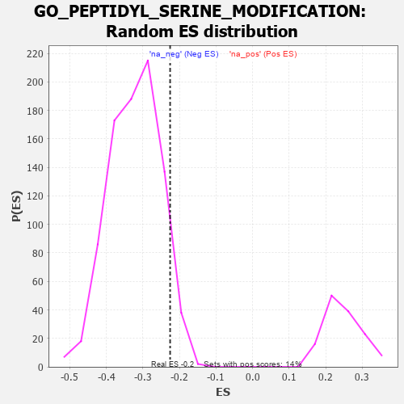

| | | Dataset | 7d |
| Phenotype | NoPhenotypeAvailable |
| Upregulated in class | na_neg |
| GeneSet | GO_PEPTIDYL_SERINE_MODIFICATION |
| Enrichment Score (ES) | -0.22548428 |
| Normalized Enrichment Score (NES) | -0.6992688 |
| Nominal p-value | 0.9363426 |
| FDR q-value | 1.0 |
| FWER p-Value | 1.0 |
Table: GSEA Results Summary
 Fig 1: Enrichment plot: GO_PEPTIDYL_SERINE_MODIFICATION
Fig 1: Enrichment plot: GO_PEPTIDYL_SERINE_MODIFICATION
Profile of the Running ES Score & Positions of GeneSet Members on the Rank Ordered List
| PROBE | GENE SYMBOL | GENE_TITLE | RANK IN GENE LIST | RANK METRIC SCORE | RUNNING ES | CORE ENRICHMENT | | 1 | DCLK1 | | | 55 | 2.532 | 0.0521 | No |
| 2 | MAST2 | | | 59 | 2.459 | 0.1092 | No |
| 3 | AXIN1 | | | 166 | 1.159 | 0.1228 | No |
| 4 | ULK1 | | | 272 | 0.875 | 0.1299 | No |
| 5 | HGF | | | 276 | 0.870 | 0.1499 | No |
| 6 | GSK3A | | | 351 | 0.745 | 0.1579 | No |
| 7 | CLSPN | | | 379 | 0.719 | 0.1712 | No |
| 8 | BAX | | | 387 | 0.711 | 0.1869 | No |
| 9 | PKN1 | | | 535 | 0.619 | 0.1828 | No |
| 10 | CCNB1 | | | 581 | 0.601 | 0.1911 | No |
| 11 | AURKC | | | 633 | 0.583 | 0.1982 | No |
| 12 | STOX1 | | | 905 | 0.506 | 0.1757 | No |
| 13 | NLK | | | 911 | 0.504 | 0.1868 | No |
| 14 | AKT1 | | | 1040 | 0.476 | 0.1817 | No |
| 15 | SRC | | | 1128 | 0.459 | 0.1814 | No |
| 16 | NCK2 | | | 1131 | 0.458 | 0.1918 | No |
| 17 | DOCK7 | | | 1398 | 0.410 | 0.1677 | No |
| 18 | VRK1 | | | 1766 | 0.343 | 0.1292 | No |
| 19 | FNIP1 | | | 1798 | 0.338 | 0.1332 | No |
| 20 | BRSK2 | | | 1979 | 0.308 | 0.1175 | No |
| 21 | RAF1 | | | 2011 | 0.303 | 0.1207 | No |
| 22 | SYK | | | 2186 | 0.278 | 0.1051 | No |
| 23 | CDK2 | | | 2226 | 0.272 | 0.1065 | No |
| 24 | MIF | | | 2357 | 0.252 | 0.0959 | No |
| 25 | HIPK2 | | | 2389 | 0.247 | 0.0978 | No |
| 26 | ATR | | | 2800 | 0.183 | 0.0501 | No |
| 27 | MARK3 | | | 3031 | 0.145 | 0.0243 | No |
| 28 | TLK1 | | | 3098 | 0.137 | 0.0192 | No |
| 29 | PARP2 | | | 3316 | 0.103 | -0.0059 | No |
| 30 | SMAD7 | | | 3369 | 0.093 | -0.0103 | No |
| 31 | TOP1 | | | 3449 | 0.084 | -0.0184 | No |
| 32 | CDK5 | | | 3480 | 0.080 | -0.0203 | No |
| 33 | MAPK3 | | | 3589 | 0.062 | -0.0325 | No |
| 34 | NSD1 | | | 3779 | 0.031 | -0.0558 | No |
| 35 | SMG1 | | | 3843 | 0.021 | -0.0633 | No |
| 36 | DGKQ | | | 3856 | 0.020 | -0.0643 | No |
| 37 | PARP1 | | | 4014 | -0.010 | -0.0840 | No |
| 38 | PKN2 | | | 4060 | -0.017 | -0.0893 | No |
| 39 | SFRP2 | | | 4065 | -0.018 | -0.0894 | No |
| 40 | MTOR | | | 4114 | -0.025 | -0.0949 | No |
| 41 | RPTOR | | | 4252 | -0.050 | -0.1111 | No |
| 42 | BAG4 | | | 4314 | -0.061 | -0.1174 | No |
| 43 | LRRK2 | | | 4467 | -0.087 | -0.1346 | No |
| 44 | ILK | | | 4510 | -0.096 | -0.1377 | No |
| 45 | NTRK2 | | | 4543 | -0.104 | -0.1393 | No |
| 46 | SRPK2 | | | 4790 | -0.155 | -0.1668 | No |
| 47 | PLCL2 | | | 4807 | -0.159 | -0.1652 | No |
| 48 | SGK1 | | | 4852 | -0.168 | -0.1668 | No |
| 49 | MARK2 | | | 4899 | -0.177 | -0.1685 | No |
| 50 | TLK2 | | | 4909 | -0.179 | -0.1655 | No |
| 51 | PRKDC | | | 4955 | -0.189 | -0.1667 | No |
| 52 | PDPK1 | | | 5043 | -0.207 | -0.1729 | No |
| 53 | HDAC6 | | | 5183 | -0.244 | -0.1848 | No |
| 54 | ATM | | | 5210 | -0.249 | -0.1823 | No |
| 55 | PTEN | | | 5262 | -0.261 | -0.1827 | No |
| 56 | CDK1 | | | 5264 | -0.262 | -0.1767 | No |
| 57 | SGK3 | | | 5338 | -0.282 | -0.1794 | No |
| 58 | LATS1 | | | 5412 | -0.298 | -0.1816 | No |
| 59 | WNK1 | | | 5650 | -0.362 | -0.2032 | No |
| 60 | TTBK2 | | | 5700 | -0.376 | -0.2007 | No |
| 61 | CALCR | | | 5730 | -0.386 | -0.1953 | No |
| 62 | TTBK1 | | | 5969 | -0.460 | -0.2147 | Yes |
| 63 | PRKX | | | 6016 | -0.477 | -0.2094 | Yes |
| 64 | PLK1 | | | 6082 | -0.500 | -0.2060 | Yes |
| 65 | TNKS | | | 6138 | -0.516 | -0.2009 | Yes |
| 66 | STK4 | | | 6145 | -0.518 | -0.1896 | Yes |
| 67 | ROCK1 | | | 6152 | -0.520 | -0.1782 | Yes |
| 68 | STK39 | | | 6274 | -0.563 | -0.1804 | Yes |
| 69 | DCLK3 | | | 6305 | -0.578 | -0.1707 | Yes |
| 70 | DYRK2 | | | 6533 | -0.677 | -0.1837 | Yes |
| 71 | PAK1 | | | 6691 | -0.757 | -0.1859 | Yes |
| 72 | EGFR | | | 6708 | -0.765 | -0.1701 | Yes |
| 73 | GSK3B | | | 6719 | -0.768 | -0.1534 | Yes |
| 74 | PAQR3 | | | 6812 | -0.819 | -0.1459 | Yes |
| 75 | GPD1L | | | 7343 | -1.215 | -0.1847 | Yes |
| 76 | DYRK4 | | | 7412 | -1.283 | -0.1634 | Yes |
| 77 | DCLK2 | | | 7529 | -1.439 | -0.1445 | Yes |
| 78 | PKD1 | | | 7628 | -1.611 | -0.1193 | Yes |
| 79 | TAF1 | | | 7643 | -1.633 | -0.0829 | Yes |
| 80 | PDE4D | | | 7764 | -1.944 | -0.0528 | Yes |
| 81 | ARRB1 | | | 7935 | -3.377 | 0.0046 | Yes |
Table: GSEA details [plain text format]

Fig 2: GO_PEPTIDYL_SERINE_MODIFICATION: Random ES distribution
Gene set null distribution of ES for GO_PEPTIDYL_SERINE_MODIFICATION